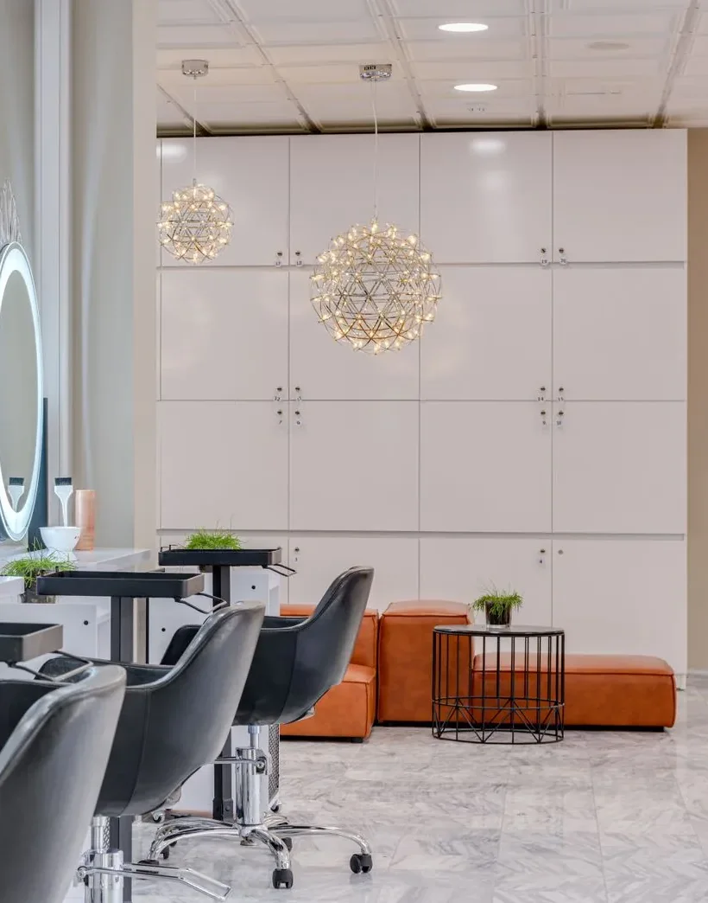
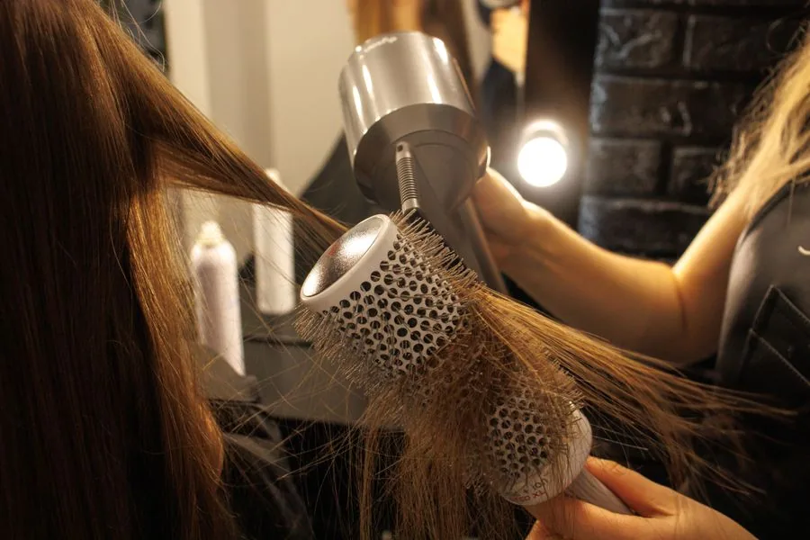
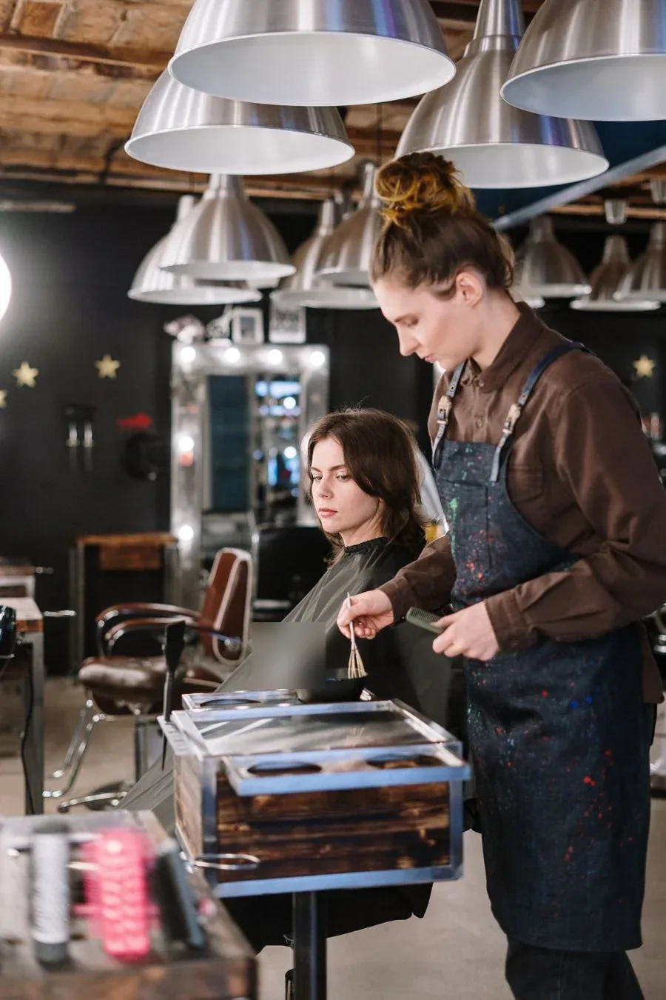
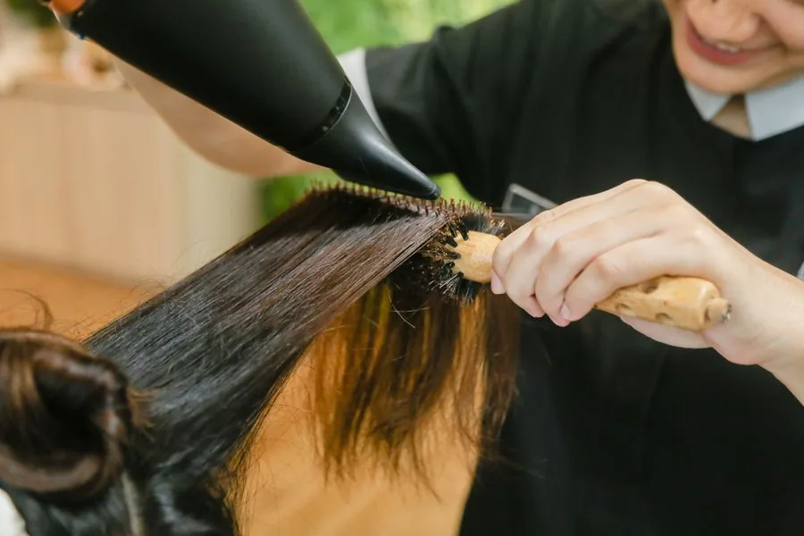
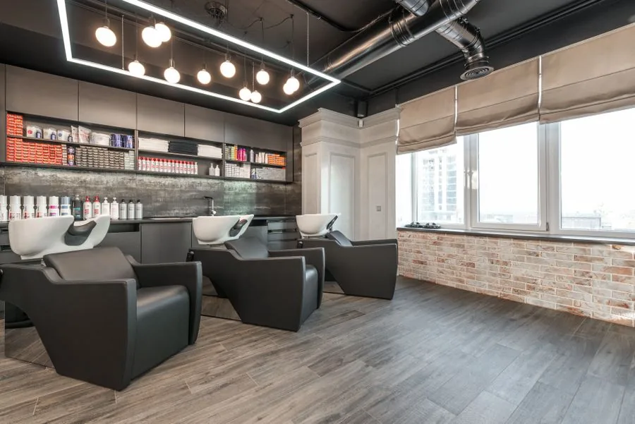
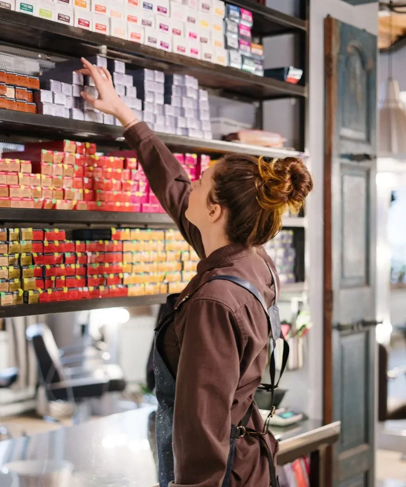

Saçınız için ayrılmış bir saat.
Kesim, renk ve bakımda önce sizi dinler, sonra başlarız. Hizmeti ve uygun günü seçin, geri kalanı salon halletsin.
Talebinizi iletin; salon sizinle iletişime geçip saati birlikte kesinleştirsin.

Hizmetler
Her işlem kısa bir görüşmeyle başlar. Fiyat; saç boyu, yoğunluk ve işlemin kapsamına göre belirlendiği için güncel fiyat için bize yazın.
-
Kesim ve şekillendirme
Yüz hattına, saç yapısına ve günlük rutininize göre kesim. Yıkama ve fön dahil bitirilir.
Güncel fiyat için yazın -
Saç boyama
Dip boyası, ton değişimi ve gri kapatma. Renk önce saçınızda denenerek ve konuşularak seçilir.
Güncel fiyat için yazın -
Işıltı ve balyaj
Doğal geçişli, büyüdükçe kötü görünmeyen açıcı çalışmalar. Saçın sağlığı işlemin önüne konur.
Güncel fiyat için yazın -
Fön ve topuz
Düz, dalgalı ya da hacimli fön; davet ve toplantı öncesi toplu saç modelleri.
Güncel fiyat için yazın -
Bakım kürleri
Boyadan, ısıdan ya da mevsimden yorulmuş saçlar için onarıcı ve nem veren bakım uygulamaları.
Güncel fiyat için yazın -
Gelin ve özel gün saçı
Deneme görüşmesiyle başlayan, günün sonuna kadar dayanması düşünülmüş gelin ve davet saçları.
Güncel fiyat için yazın
Çalışmalardan kareler
Salonun gündelik işleyişinden; fön, renk ve bakım anları.





Küçük ekip, tanıdık yüzler
Her randevuda aynı usta başından sonuna kadar sizinle ilgilenir; işi kimseye devretmez.
Defne
Kurucu usta, kesim ve form
Kesime saçın nasıl düştüğünü izleyerek başlar. Bakımı kolay, kendi kendine duran formlar sever.
Meral
Renk uzmanı
Boya ve balyajda önce saçın durumuna bakar. Rengi saçın sağlığına zarar vermeden kurar.
Cansu
Fön, topuz ve gelin saçı
Özel günlerde deneme görüşmesiyle ilerler; saat kaç olursa olsun saç yerinde kalsın diye çalışır.
Randevu talebi
Dört kısa adımda talebinizi iletin. Salon, size ulaşarak gün ve saati kesinleştirir.
- Salı – Cuma09:30 – 19:30
- Cumartesi09:00 – 19:00
- Pazar, PazartesiKapalı
- Talebiniz bize doğrudan ulaşır.
- Salon sizinle iletişime geçip randevuyu kesinleştirir.
- Saati değiştirmek isterseniz bize yazmanız yeterli.
Sık sorulanlar
Aklınıza takılan başka bir şey varsa randevu notuna yazmanız yeterli.
Randevum nasıl kesinleşir?
Formu gönderdiğinizde talebiniz salona ulaşır. Salon sizinle iletişime geçer, uygun gün ve saati birlikte belirler; onay verdiğiniz an randevu kesinleşir.
Fiyatı nereden öğrenirim?
Fiyat; saç boyu, yoğunluk ve yapılacak işleme göre değiştiği için sitede sabit liste yok. Talebinizi iletirken ne yaptırmak istediğinizi yazarsanız güncel fiyat bilgisini size iletiriz.
Boya ya da balyaj öncesi bir şey yapmam gerekir mi?
Saçınızı o gün temiz ve ürünsüz getirmeniz yeterli. Daha önce boyalıysanız notunuza yazın; ustanız süreyi ve işlemi ona göre planlar.
Randevumu değiştirebilir veya iptal edebilir miyim?
Evet. Değişiklik gerekirse salona haber vermeniz yeterli; hem sizin hem de sonraki müşterinin saati boşa gitmesin diye mümkün olduğunca erken yazmanızı rica ederiz.